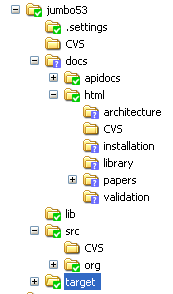
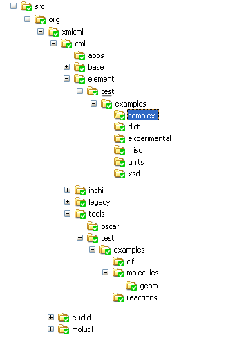

Blogging Chemical Markup Language
You cannot “run� JUMBO (it has no unique main()) but you can take it for a walk in the following ways…
JUMBO contains over 2000 units tests. These were written primarily to test the correctness and robustness of the code against modification. However they also act as good examples of how to use the code. So to see JUMBO walking, run the unit tests in Eclipse (jumbo53 | right-click | Run as … Junit Test). This will run through all the tests - ignore any warnings in the output at present.
You can browse the unit tests in Eclipse, of course, but you can also see the HTML on SF at:
http://cml.cvs.sourceforge.net/cml/jumbo53/src/org/xmlcml/cml/element/test
and look at an individual class such as CMLMoleculeTest:
Here’s a typical test (to transform coordinates):
550 public void testTransformFractionalCoordinatesTransform3() { 551 CMLMolecule mol0 = (CMLMolecule) parseValidString( 552 "<molecule " 553 + CML_XMLNS 554 + ">" 555 + " <atomArray>" 556 + " <atom id='a1' elementType='N' x3='1.0' y3='2.0' z3='3.0'
xFract='0.1' yFract='0.2' zFract='0.3'/>" 557 + " <atom id='a2' elementType='O' x3='1.8' y3='2.8' z3='3.8'
xFract='0.15' yFract='0.25' zFract='0.35'/>" 558 + " </atomArray>" + "</molecule>" 559 + ""); 560 CMLMolecule mol = new CMLMolecule(mol0); 561 CMLTransform3 tr = new CMLTransform3(new double[] { 562 1, 0, 0, 0, 563 0, -1, 0, 0.5, 564 0, 0, -1, 0.25, 565 0, 0, 0, 1 }); 566 mol.transformFractionalCoordinates(tr); 567 CMLAtom atom0 = mol.getAtom(0); 568 Point3Test.assertEquals("transform", new double[] { 1, 2, 3 }, atom0 569 .getXYZ3(), EPS); 570 Point3Test.assertEquals("transform", new double[] { 0.1, 0.3, -0.05 }, 571 atom0.getXYZFract(), EPS); 572 Assert.assertEquals("transform", "N", atom0.getElementType()); 573 Assert.assertEquals("transform", "a1", atom0.getId()); 574 CMLAtom atom1 = mol.getAtom(1); 575 Point3Test.assertEquals("transform", 576 new double[] { 0.15, 0.25, -0.10 }, atom1.getXYZFract(), EPS); 577 } 578
Lines 550-559 generate a molecule from the XML representation. (CML_XMLNS represents the CML namespace declaration, and parseValidString() is a convenience method to apply CMLBuilder() to this string).
line 560 clones the molecule
561-565 creates a transform3 object
566 applies the transformation
567 extracts a typical atom (after transformation)
568 tests that the cartesians have been transformed OK
570 does the same for the fractionals
572-573 checks the atom is the right one
574 clones the atom
575 checks it has the correct fractional coordinates
This describes the release of JUMBO5.3beta. It’s an early adopter release. If you don’t know anything about XML and Java and CML you’ll need to read some of the basic docs. If you do, and have been waiting for a stable JUMBO, pitch right in.
After you have unpacked JUMBO you’ll see something like this (yes, I’m still using Windows  ).
).
| .. |  |
The left is the top tier of directories; the right is the expanded src tree. The main features are:
- docs contains (a) apidocs (autogenerated from the Java source). If you aren’t a programmer, neglect these to start with (b) html: human-written docs. We shall add to these over the next few days. If you don’t know what CML is for a good place to start is with the “papers� section where there are some introductory overviews. Beware - some of the older papers may have a few obsolete usages, but generally the methodology is correct and valuable.
- lib contains the jar files necessary to run JUMBO. Don’t poke these.
- src contains the source code and examples. More below.
- target may be absent and holds the outputs autogenerated by JUMBO when run in Eclipse or under maven/ant.
The src directory contains:
- cml. The root of most of the code. This contains:
- base. Superclasses (CMLElements and attributes) and various utilities
- element. The main CML classes
- element/test. Unit tests for these. These may be moved in maven distributions. These are a useful source of CML examples.
- element/test/examples. A wide range of examples, most of which are exercised by the unit tests. (a) complex are real-life examples (b) experimental tests the fragment builder and other classes under development (c) xsd holds the per-element examples. units and dict are copies of dictionaries to support the examples.
- tools. More powerful or complex classes to manage conversions, normalizations, mappings, etc. Many of the important classes (molecule, spectrum, etc.) have a tool which helps prevent bloat.
- geom1. holds fragments for building
- euclid. Library utilities for numbers and geometry
- molutil. Periodic table and other data.
JUMBO itself has no main() so you cannot “run� JUMBO (and clicking the jar makes little sense). The next post describes what JUMBO can do.
Today
we are getting ready to release a version of JUMBO. This is quite
complicated and hasn’t happened for a long time. (The “release early
release often� mantra is satisfied by the “nightly� builds on SF to the
extent that when we commit code we make sure that the unit tests build.
(I am now using this blog as a primary means of writing documentation,
so I shall copy this directly into the distro).
Releasing JUMBO is complex because:
- JUMBO depends on the CML schema. Every time the schema is updated, we need to revise JUMBO. This is NOT automatic, nor - as you will see in later posts - could it be.
- Some JUMBO code is autogenerated from the schema. This is a rather hairy process because the generated code has to be compiled before the rest of JUMBO will compile. This does not work well under Eclipse due to its lazy approach. It is rather better with ant.
- JUMBO is large. It’s over 100,000 lines and so it’s easy to get lost. That means that there are bits of stuff from past ice ages which need to be discovered and removed. I’m getting better at that
- The schema is informed by per-element examples, so the examples have to be updated every time the schema changes. the examples are run in the normal unit tests, but mainly to check that they are syntactically correct - we don’t check values.
- The schema is also informed by application examples. Those are real working documents in CML and they have to be kept in synch with the schema.
- Many of the tests depend on data in files. They can’t be just anywhere - they have to be in the right relation to the classes. We think we have sorted this but there are always likely to be initial porting problems
- There have to be sufficient docs to be useful. That’s what I’m currently doing (see next post)
- There were libraries and apps which had cyclic dependencies. Thus crystalTool would be tested with CIF data. This meant that CIF libraries had to be distributed with JUMBO. We are now separating the CIF functionality from the CMLCrystal functionality. The CIF is used to create the test data but doesn’t have to be present.
So the current approach is:
- allow development on the current head (developers will so far notice no difference)
- freeze the current CVS (called JUMBO5.3 currently)…
- clean the frozen version (�JUMBO5.3b1″) and add necessary enhancements to docs, examples, etc.
- release as a zip/tgz which contains a binary jar and all the source, examples, docs
- … move the current development to JUMBO5.4 and move to SVN.
- make only minor bugfixes (no feature-creep) on the frozen version (JUMBO5.3.b2…)
- finally release JUMBO5.3.jar
The jars will be the first for a long time. Early adopters can try out the betas. The next post tells how to understand them.
In his ChemBark blog Paul Bracher asks: Help needed: How do we use CML properly?
He asks some very reasonable queries and I’ll answer them both here an on his blog comments - you may find yourself having to switch between them. I’m not quite sure where the discussion will end up.
Bear with us for this post as we send out the bat signal to attract the chemical informatics crowd. I’m talking about the Peter Murray-Rusts of the world, who draw their superpowers from the glow of fluorescent lighting as they sit and hammer out code for hours on end.
(He does not yet realise most of us are actually pan dimensional hyperbeings. Of course we don’t have lives in the human sense).
On their blogs, Joerg Wegner and Murray-Rust took the rest of the chemistry blogosphere to task for not including more minable data, using standards such as Chemical Markup Language (CML). CML is used to include metadata on chemical structures and compounds that people post on the Internet. While it’s essentially invisible to human readers, search engines can use the extra data to sift through content on the Internet more efficiently for information that is specific to user-defined queries about chemical structures or substructures.
A good analysis
Aside from that gibberish in the last paragraph, we know nothing about the subject of informatics and making chemically-minable data. Since we’re basically starting this blog from scratch, we want to try to get all the informatics stuff right from the beginning.
This is a wonderful motivation, Paul and we’ll try to respond.
I notice that using the latest version of ChemDraw (Ultra 9), you can save structures as CML files (in addition to the “usual� .cdx). Where is the proper place to put this CML code? In the image file? Can it go anywhere in the blog post?
In principle CML - like other XML languages such as MathML - can be mixed with XHTML. Unfortunately blogs don’t do XHTML very well yet. It may take a year or so for the world to sort this out. So don’t try to put CML in the blog. That’s a great pity, but it shouldn’t last for long.
We also have the following questions:
1. Is CML the “standard� way of including structural information in electronic form? For instance, how does SciFinder or Beilstein store this information? If they don’t use CML, why don’t we just do it the way these programs do it, since they are the main tools already used by chemists?
There is no “standard� way of including structural information in chemistry - there are about 10 main file types and many others in use. I’ll discuss the pluses and minuses of CML and the other formats in later posts.
2. How do you recommend tagging images of chemical structures? Is a name and CAS number good? Is this unnecessary if the CML data is in there?
It depends what you want to do. If you want to index organic structures, then I think the InChI is the best way to do it. The problem with CAS numbers is there is no way to look them up without subscribing to CAS. And also that if the molecule hasn’t been formally published it won’t be in CAS.
3. Is there anything else we’re missing?
I’ll cover these in my comments on your blog.
Thanks!
and likewise
(Read more on comments to Paul: )
As CML becomes more widely deployed we find that there are an increasing number of ways in which it can be used. Sub-groups want the flexibility of expressing their own domains without CML “getting in the way� - after all it’s meant to be extensible. This post reviews some of those parts of CML which are fixed and those which are fluid.
The main thesis of CML is that there are a number of CMLElements which are context-independent as far as software is concerned. Let’s take molecule again:
<cml:molecule id="m1" title="Carbon Monoxide" xmlns:cml="http://www.xml-cml.org/schema"> <cml:atomArray> <cml:atom id="a1" elementType="C" x2="0" y2="0"/> <cml:atom id="a2" elementType="O" x2="0" y2="100"/> </cml:atomArray> <cml:bondArray> <cml:bond id="b1" atomRefs2="a1 a2" order="T"/> </cml:bondArray> </cml:molecule>
All CML-aware software should be able to process this in some way. It is possible to have CML applications where the atoms and bonds are unimportant in the domain. This might happen in parts of bioscience where the components of a metabolic pathway were represented by coarse grained concepts, e.g.
<cml:molecule id="m2" title="Carbon Monoxide" xmlns:cml="http://www.xml-cml.org/schema"/>
in other applications (e.g. computational chemistry we might need a different set of information, e.g.
<cml:molecule id="m3" xmlns:cml="http://www.xml-cml.org/schema"> <cml:atomArray> <cml:atom id="a1" elementType="C" x3="0" y3="0" z3="0"/> <cml:atom id="a2" elementType="O" x3="0" y3="0" z3="1.1"/> </cml:atomArray> </cml:molecule>
Notice that here there is no title, but there are 3D coordinates. (By default CML uses Angstrom for coordinates - it is possible to use other units and I’ll address that later. This was an early design decision and possibly not a happy one - nearly everywhere else CML insists on units.). Also notice that there are no bonds - many theoretical models do not require bonds or even recognise their existence.
So what does processing software do with any of these? What is shouldn’t do is crash. There are two main approaches to software in XML - that which makes assumptions about what it is going to find and that that doesn’t. These are sometimes called “pull� and “push�. They are also exemplified to some extent by the SAX and DOM approaches.
JUMBO uses the DOM approach (it actually uses SAX to build the DOM). So it can the same command to read any CML document:
Document doc = new Builder().parse(file);
Assuming the XML is well-formed this will never fail. (The only downside of the DOM is that it requires the whole document to be read into memory). Software might then try to find out if there are any molecules in the document. Here’s a possible strategy (even if you aren’t a programmer you should be able to follow the logic; I’m also simplifying bits):
List
This is a simple utility in JUMBO’s CMLUtil library that uses XQuery (part of the XML toolkit) to search the document for chunks of information (�nodes�). The address (�.//cml:molecule�) says - “search the whole document for any element with name cml:molecule“. The (�.//�) is very powerful and is a wonderful way of finding parts of documents. Here is a simple XQuery for all speeches (in Jon Bosak’s XML edition) by HAMLET:
List<Node> hamletSpeeches = CMLUtil.getQueryNodes(shakespeare, ".//SPEECH[SPEAKER='HAMLET']", ...);
It doesn’t matter where the speeches are in the play - XQuert will find them all. Hopefully you start to get the power of it.
So CML-aware software often uses this approach. (There are other tools such as XSLT which use the same philosophy in a different syntax. And almost all major languages except FORTRAN (and Toby White is working in this area) support XQuery).
Let’s consider 3 programs:
- Jmol. Draws molecule as a beautiful 3-D rotatable object.
- JChempaint. Draws and edits 2-D molecule
- JSpecView. Display interactive spectra in CML.
Here’s a table of “reasonable behaviour�:
| Molecule | Jmol | JChempaint | JSpecView |
|---|---|---|---|
| m1 | “Can’t display; no 3-D coordinates� | Draws beautiful chemical diagram | “Can’t display; no spectrum� |
| m2 | “Can’t display; no atoms� | “Can’t display; no atoms� | “Can’t display; no spectrum� |
| m1 | Draws beautiful 3-D rotatable molecule | No bonds: Displays two isolated atoms (C and O) | “Can’t display; no spectrum� |
So the general philosophy of CML is: “If I can find something I understand, do something reasonable with it.� The action should not depend on the parts of the document that the program cannot interpret. If a program finds a molecule with 3D coordinates it should be able to display it without worrying about whether there is a spectrum, a reaction, etc. that hasn’t been interpreted. That is what I mean by context-independence.
I have changed the title of this to try to stop the angle brackets fouling up plate and other feeds
Molecules, atoms and bonds are a good place to start in understanding the practice and philosophy of CML. Let’s start with an example (in this post we use an explicit CML namespace prefix):
<cml:molecule id="m1" title="Carbon Monoxide" xmlns:cml="http://www.xml-cml.org/schema"> <cml:atomArray> <cml:atom id="a1" elementType="C" x2="0" y2="0"/> <cml:atom id="a2" elementType="O" x2="0" y2="100"/> </cml:atomArray> <cml:bondArray> <cml:bond id="b1" atomRefs2="a1 a2" order="T"/> </cml:bondArray> </cml:molecule>
What does this mean? Reading from the top:
- There is a single root element with local name molecule belonging to namespace http://www.xml-cml.org/schema. (Remember that in CML each section is called an element.) The namespace has a prefix cml which is attached to all CML elements.
- The molecule has two attributes: id and title. The value for id is “m1″. It is very valuable to put IDs on most elements as it helps the machine locate them and you’ll see this strategy in many XML documents. The title is a human readable attribute and it’s value doesn’t normally mean anything to the machine. Many elements in CML will benefit from having id and title attributes. (Note that all element and attribute names are case-sensitive).
- The molecule has two child elements, atomArray and bondArray. The atomArray has two atom children and the bondArray has one bond child. This type of nesting is very common in XML. The order of the children is defined and may matter (though in CML most order is deliberately unimportant).
- The atoms have four attributes each. The ids are essential as they are the only way the machine knows how to locate the atoms. All other attributes are optional. In this case we assert that the atoms have elementTypes which give the element symbols (it might have been better to choose this term but it’s too late now). The values are from a controlled vocabulary - i.e. they have to come from the IUPAC periodic table. There are also X and Y 2-coordinates. These are solely for “drawing the molecule on paper� and for defining wedge/hatch and cis/trans stereochemistry. They have no relation to the 3-D coordinates or the fractional coordinates. It’s perfectly allowable to have an atom without any coordinates of any sort. In some cases it could be possible to have atoms without element symbols. In fact we anticipate that almost any combination or omission of attributes is possible.
- The bonds also use attributes. The atomRefs2 attribute is very common and depicts the atoms in a 2-atom bond. It references their ids and it is an error if atoms with those ids cannot be found. The bond order is symbolic and in this case uses T to mean triple..
In total, therefore, the CML represents a molecule with 2 atoms (C and O) joined by a triple bond. Other molecules may be larger but most CML molecules will use the same strategy.
Wow! I have found out how to write the CML/XML prettily. It was the evil “rich editor� that does it. Switching it off and typing native XHTML (which I prefer) solves the problem. So, on with the tables…
So here is our first table yet again:
| Time (sec) | Temp (K) |
|---|---|
| 10.0 | 280 |
| 20.0 | 290 |
| 30.0 | 285 |
| 40.0 | 287 |
Column-based (array) format
As a result of extensions to the language there’s a small change to the column-based array format:
<table title="thermal history" id="tab1" tableType="columnBased"> <arrayList> <array id="tab1.1" title="time after start" dictRef="acme:reactiontime" dataType="xsd:float" units="u:sec">10.0 20.0 30.0 40.0</array> <array id="tab2.2" title="observed temperature" dictRef="acme:obstemp" dataType="xsd:float" units="u:sec">280 290 285 287</array> </arrayList> </table>
We have now wrapped the arrays in a new element, <arrayList. Why? It’s a change from the current spec, will break current software and seems more complicated. The reason is that there is a demand for other formats and there needs to be more structure.
Row-based format
In many disciplines the rows in tables are emphasized and in relational tables rows (tuples) are the normal way of adding or removing information. So our table now looks like:
<table border="1" tableType="rowBased"> <tableHeader> <tableHeaderCell id="tab1.1" title="time after start" dictRef="acme:reactiontime" dataType="xsd:float" units="u:sec"/> <tableHeaderCell id="tab2.2" title="observed temperature" dictRef="acme:obstemp" dataType="xsd:float" units="u:sec"/> </tableHeader> <tableRowList> <tableRow> <tableCell>10.0</tableCell> <tableCell>280</tableCell> </tableRow> <tableRow> <tableCell>20.0</tableCell> <tableCell>290</tableCell> </tableRow> <tableRow> <tableCell>30.0</tableCell> <tableCell>285</tableCell> </tableRow> <tableRow> <tableCell>40.0</tableCell> <tableCell>287</tableCell> </tableRow> </tableRowList> <lt;/table>
This now emphasizes the rows - in fact it has the same structure as XHTML tables. But XHTML is presentational and has no simple mechanism for adding semantics to rows or columns. So we introduce the concept of tableHeader - which provides the semantics for each column. It’s not very different from the use of tr/th in XHTML. However to make a complete separation we introduce yet another element, tableRowList. This is purely a container for tableRows.
So we have added a lot of complexity (6 new elements and a new data structure). Was that a good idea? I’m not sure. On the one hand it makes it easier for users (who are used the XHTML and relational data) and on the other makes it harder for developers. It’s not too difficult to convert between them, so I hope it turns out to be useful. (Perhaps we should have gone the whole way and created rowBaseTable and columnBasedTable as completely different elements. Who knows?)
It gets worse. Under prompting from the FORTRAN-based community (who are very active in developing CML applications) there is a demand for a minimal approach that mimics line-based output. The table could therefore be written as:
Thermal history =============== Time (sec) Temp (K) ---- --- 10.0 280 20.0 290 30.0 285 40.0 287
where the markup is implied. This is also similar to comma-separated-value files (CSV) which may look like:
Time (sec) , Temp (K) 10.0,280, 20.0,290, 30.0,285, 40.0,287,
This can, of course, be managed by the tableRow approach above, but there is a worry that the ratio of markup to data is high, for memory, processing time and bandwidth. These fears are probably unfounded, but I have acceeded and come up with a third format:
<table border="1" tableType="contentBased"> <tableHeader> <tableHeaderCell id="tab1.1" title="time after start" dictRef="acme:reactiontime" dataType="xsd:float" units="u:sec"/> <tableHeaderCell id="tab2.2" title="observed temperature" dictRef="acme:obstemp" dataType="xsd:float" units="u:sec"/> </tableHeader> <tableContent rows="4" columns="2"> 10.0 280 20.0 290 30.0 285 40.0 287 </tableContent>
So that’s the third format. I’ve implemented all of them in JUMBO and shown they work and can be interconverted. There are some slight nuances, but that’s enough for now.
In the last post I outlined the philosophy behind CML tables as rectangular objects with homogeneous columns. This is, of course, very similar to tables in relational databases (�fields� or “attributes� may be used instead of “columns�, but note that an XML attribute is not the same as a relational attribute). Unlike relational tables the order of objects in a CML column is preserved and it can be though of as having ordered rows (RDB tables have unordered rows).
So here is our first table again:
| Time (sec) | Temp (K) |
|---|---|
| 10.0 | 280 |
| 20.0 | 290 |
| 30.0 | 285 |
| 40.0 | 287 |
but now we shall add the semantics:
<table title="thermal history" id="tab1"> <array id="tab1.1" title="time after start" dictRef="acme:reactiontime" dataType="xsd:float" units="u:sec">10.0 20.0 30.0 40.0</array> <array id="tab2.2" title="observed temperature" dictRef="acme:obstemp" dataType="xsd:float" units="u:sec">280 290 285 287</array> </table>
(sorry that it looks horrid, but that’s WP).
So CML tables are based on semantic homogeneous columns and this is
how we managed tables until recently. If you organise your software to
write and read tables like this it’s straightforward. And because
<array> is used in many other areas of CML there is a lot of
semantics and code we can borrow.
However some users of CML found this unnatural. The column
based-approach means writing and reading vertically. However much
software (especially FORTRAN) is based on rows (or lines). That’s why
it’s called a lineprinter - it prints across the page line by line. In
a table this is a row-based approach. That’s completely orthogonal.
So a major dilemma. If we say “you have to use columns� then some of the users and developers may moan and ultimately move away from CML. On the other hand if we have two completely different ways of managing tables we (that normally means PMR) have to support both, and there is the added possible incompatibility of two different representations. In general it’s valuable to keep the language as small as possible.
However I gave in to demands. Those whose asked for rows have now got them. They need to use them! The saving grace was that CML rows can be very closely based on XHTML tables. Not exactly - we don’t use the actual markup in case it confuses software, but we now have:
- table
- tableHeader
- tableHeaderCell
- tableRowList
- tableRow
- tableCell
This is a lot more that the code has to support. However it is fairly
straightforward (though still a lot of work). The structure for a row-based table is:
table
…tableHeader
……tableHeaderCell*
…tableRowList
……tableRow*
………tableCell*
(where * means 0 or many)
More in the next post
I’ve given up on Wordpress as a means of authoring XML or CML directly and so I can’t give any actual XML (other than the odd line). So this blog will be more discursive than technical. Maybe that’s a good thing! So here goes. I’ll pick some general topics in CML and see what happens. Hopefully there will be some comments.
Over the last 4 weeks Justin Davies and I have been working on Tables. Particularly tables that occur in publications and shipping small to medium amounts of data. For very large data sets it’s probably better to look at HDF or NETCDF.
Why do we need tables, and why should CML bother - isn’t it about chemistry? Well, all sciences need tables to carry systematic information and chemistry publications are full of tables. It would be nice if someone had written a universally adopted spec and markup language - we’d certainly use it rather than write our own.
We might look at the CALS spec which is widely used in industry. But the specs are from 1995 (SGML DTDs rather than XML Schema) and emphasize formatting as well as content. For science we are primarily interested in content, rather than format.
We can also look at the XHTML spec (and in fact that informs some of the current design). The XHTML spec is very versatile, but that can be a problem - it’s often used for things that are not semantic tables - e.g. layout of pages, pretty formatting for certainly semistructured objects, etc.
But what is a table? In CML we define it to be a 2D rectangular collection of data objects, which is homogeneous in at least one direction. By convention we select the “columns� as being homogeneous. That doesn’t mean it cannot be laid out with them horizontal if we need to. In general a table has columns with different semantics - if all the objects have exactly the same semantics it is better to use a matrix. Here are some examples:
Column-based table
| Time (sec) | Temp (K) |
|---|---|
| 10.0 | 280 |
| 20.0 | 290 |
| 30.0 | 285 |
| 40.0 | 287 |
This is easy to hold in a data structure and we’ll see how later. It’s an ideal CML <table>.
Rotation Matrix
| 0.0 | 1.0 | 0.0 |
| 0.0 | 0.0 | 1.0 |
| 1.0 | 0.0 | 0.0 |
This is also well structured, but CML has specific tools for <matrix> and there is lots of support for matrix operations. (symmetric, square, triangular, etc.)
A non-rectangular table
| Treated | Untreated | ||
|---|---|---|---|
| Time (sec) | Temp (K) | Time (sec) | Temp (K) |
| 10.0 | 280 | 10.0 | 281 |
| 20.0 | 290 | 20.0 | see Ref1 |
| 30.0 | 285 | 30.0 | Decomposed |
| 40.0 | 287 | ||
This last example shows the problems with “tables�. It’s all done in HTML but it’s not rectangular and it’s not homogeneous. It’s difficult to devise the right data structure for it. It could be best to split it into two tables - teated and untreated, or it might be worth having a CML table with four columns - time, treated temp, untreated temp, and notes.
Semantics
Scientific data always have semantics attached - unfortunately they are often implicit. So in the first table we can guess that “temp� means temperature and K means Kelvin, but it’s only a guess. CML therefore requires the use of several attributes to add semantics. An example for column1 might be:
<array id="a123" title="time after start" dictRef="acme:obstemp" dataType="xsd:float" units="u:sec">10.0 20.0 30.0 40.0</array>
Each column can have (and usually should have):
- id (unique id). This is usually not visible, but machines love ids and they should be used wherever possible.
- title. This is human readable only and while it may be useful for text searches it is a fragile way of describing something precisely.
- dictRef (pointer to dictionary entry). This is one of the major features in CML’s power and flexibility. The namespace prefix (acme) maps to a unique namespaceURI which allows anyone in the world to create their own dictionaries without clashes. obstemp points to an entry in this dictionary describing the precise semantics of the concept.
- dataType. usually xsd:string, xsd:integer, xsd:float.
- units. essential for any physical quantity. Points to a units dictionary (there can be many of these by using namespaces)
That wasn’t too painful, either for me or - I hope - you. In the next post I’ll show how the tables might be arranged.
I have been so distracted by the other blog that this one has been neglected for a month…
CML is designed to represent much chemistry in current chemical publications. It should also be possible to create undergraduate textbooks and some reserach monographs in CML. The ideas are simple since many chemical concepts are 100+ years old and well standardized. The baic objects we deal with are:
- molecules containing atoms and bonds.
- substances besides molecules
- properties of molecules and substances
- reactions between molecules and substances, including conditions of the experiment.
- computations of molecules, reactions and their properties
- spectra of many sorts
- crystalline and solid systems
- polymers (under construction)
To do this we have created about 50 elements which are designed to be simple enough to implement but powerful enough to support a wide range of chemistry. It should be possible to understand a CML document with few surprises. In most cases it is easy to construct them, though there are times when the semantics themselves are fuzzy and that means there is flexibility in the representation.
Chemistry is a physical science and there are many concepts that are common to other disciplines, such as temperature, pressure, melting point, etc. We do not create specific elements for each of these, but use a generic approach based on data structure, data type and dictionaries. This also includes scientific units of measure. This combination is very powerful and allows tens of thousands of concepts to be easily represented in CML.
In the next posts I shall cover some of these in greater depth.